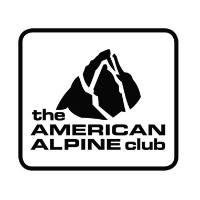
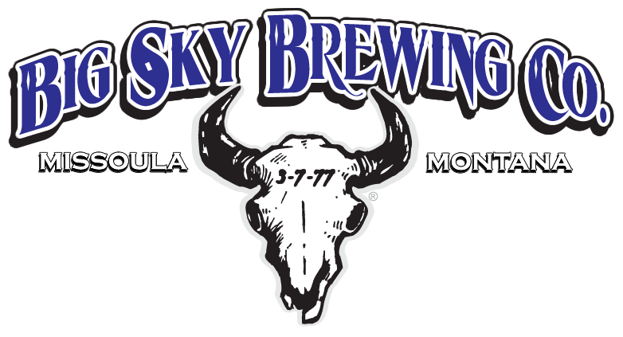

"Because it is there."
–George Mallory

In July 2017, Sawyer Wylie and Matt Berry traveled to the Cordillera Blanca in Peru to climb Alpamayo and Artesonraju. It has been a dream of Matt's to climb in this mountain range, specifically Alpamayo, since he began climbing in 2008. Alpamayo sits at 19,500ft and requires 2,000ft of technical climbing to reach the summit. This expedition was powered by the American Alpine Club and Big Sky Brewery.
In January 2015, CJ Oels and Matt Berry traveled to Argentina to climb Aconcagua, the tallest peak in South America. The peak is one of the seven summits and sits at 22,840ft. This was their first time to such extreme altitude and the goal of the trip was to evaluate how each of them handled the thin air. The route the team originally set out to climb was not in condition and thus the team opted for the polish glacier traverse to reach the summit via the legendary "Canaleta".


In May 2014, Joe Grasso and Matt Berry teamed up to climb the Liberty Ridge on Mt. Rainier. This climb is considered one of the "50 classics of North America". It is a moderately technical route that takes the direct line up the north face on Mt. Rainier to the Liberty Cap. It involves a lot of glacier and snow travel and is extremely commiting. Conditions on the route were not ideal and although the team was successful, Matt walked away with severe frostbite on his right foot and minor snow blindness.
In January 2013, Andrew Erwin, Matt Rohsler, and Matt Berry traveled to the Krabi region in Thailand to sample some of southeast Asia's beachside sport climbing. The team of three spent three and a half weeks exploring Tonsai, Railay, and Pra'Nang beach. The climbing lived up to all of the hype and the team was pleasantly surprised at how good the SCUBA diving was in the immediate area. The potential for B.A.S.E. exits was overwhelming and Matt plans to head back to the region in 2018 with the appropriate equipment.

In July 2012 Joe Grasso, Jessica Cardieo, and Matt Berry traveled to Ecuador for three weeks to climb some of the regions well known high-altitude volcanos. The team successfuly climbed Cotopaxi (19,500ft), Chimborazo (20,564ft), and Illiniza Sur (17,218ft). This was the team's first time on a 6,000m peak. All climbs involved considerable glacier and snow travel and some moderate technical climbing. They also rented motorcycles and toured through "Mindo", a high altitude rain forest.
In January 2011, Andrew Erwin, Matt Rohsler, and Matt Berry traveled to Mexico to climb Pico de Orizaba (18,491ft), La Malinche (14,636ft), Nevado de Toluca (15,354ft), and Iztaccihuatl (17,159ft). This was Andrew and Rohsler's first time mountaineering and first time to high altitude. Both are extremely strong sport climbers, but mountaineering is anything but. Berry gave them the grand tour of Mexico and introduced them to thin air over the three week trip.